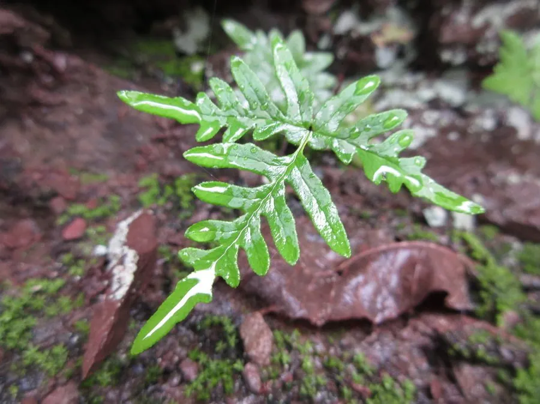

蕨类与裸子植物 · 植物界
银粉背蕨 Aleuritopteris argentea

银粉背蕨的叶背覆盖银白色蜡粉，在阳光下闪闪发亮，常见于北方干旱的岩石缝隙中，全草可以入药。
- 分类
- 门蕨类植物门纲水龙骨纲目水龙骨目科凤尾蕨科属粉背蕨属
- 栖息环境
- 岩石缝、石灰岩山地与干燥山坡，喜光、耐干旱瘠薄
- 地理分布
- 中国华北、西北、西南及华东部分地区，东亚也有分布
- 保护级别
- 暂无评估；野生种群稳定
物种志
银粉背蕨是凤尾蕨科小型蕨类，株高 10–30 cm。根状茎短而横走，密生鳞片。叶簇生，叶柄栗褐色；叶片五角状三角形，二至三回羽状分裂，末回小羽片狭长；叶面绿色，叶背密被银白色蜡质粉状物，在阳光下泛出银光，因此得名。孢子囊群沿叶脉排列，成熟时褐色。
银粉背蕨喜光也耐阴，耐干旱、耐瘠薄，常生于北方及西南的岩石缝、石灰岩山地与干燥山坡，是钙质土壤的指示植物之一。它以孢子繁殖，植株小巧，姿态秀丽，适合岩石园和假山点缀。全草入药称“通经草”，有活血通经、祛湿之效，民间用于月经不调、风湿疼痛等症。银粉背蕨叶背的银白色蜡粉能反射强光、减少水分散失，是它适应干旱岩石生境的“法宝”。
形态与习性
- 株高10–30 cm
- 叶五角状三角形，二至三回羽状
- 叶背密被银白色蜡粉
- 药用全草称“通经草”
- 生境岩石缝与石灰岩山地
趣味知识
- 银粉背蕨叶背的银白色蜡粉能在阳光下反光，所以叫“银粉”。
- 它常长在岩石缝里，耐旱耐瘠薄，是钙质土壤的指示植物。
- 全草入药称“通经草”，民间用来活血通经、祛风湿。